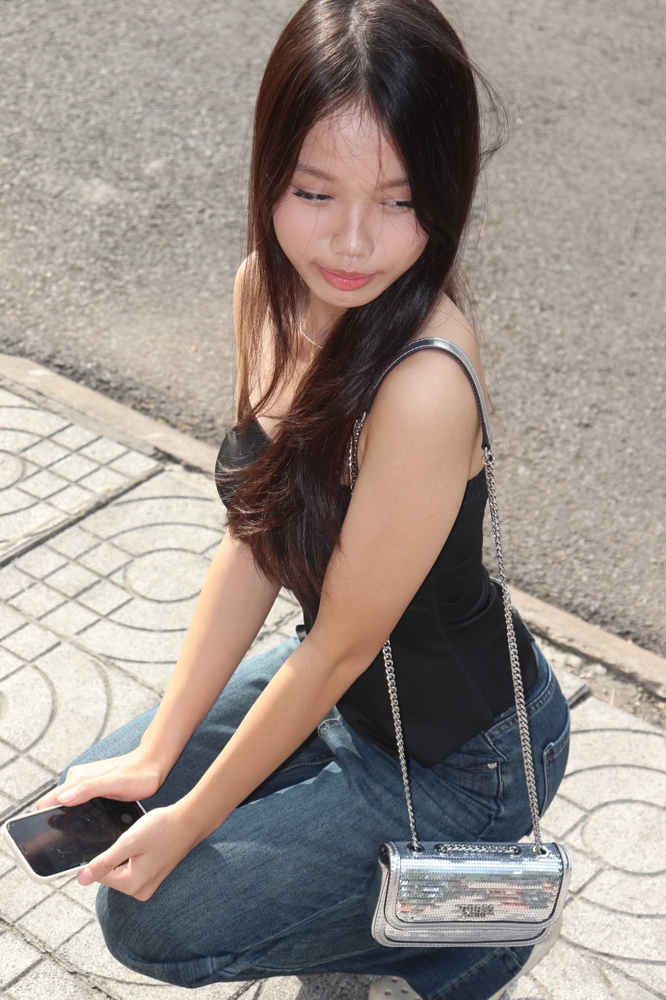
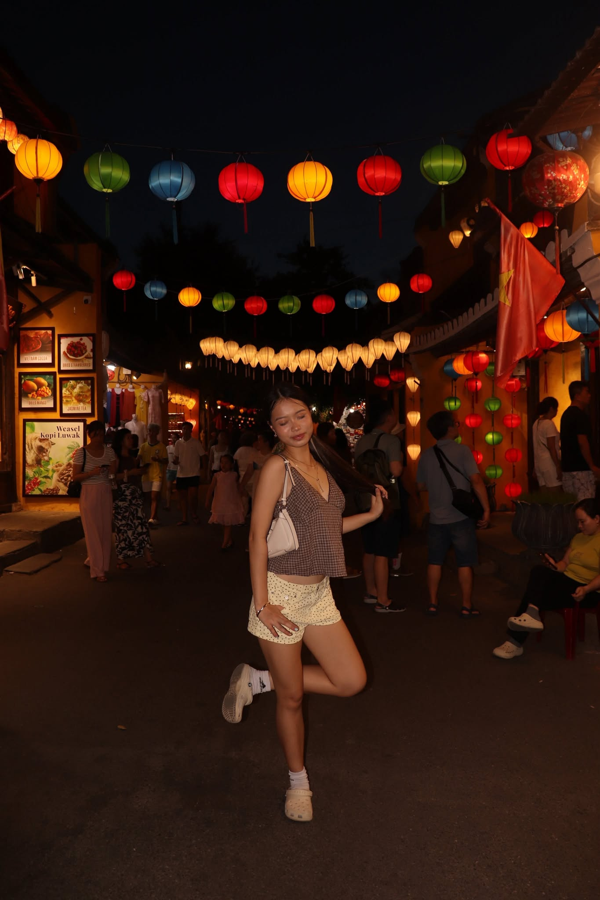
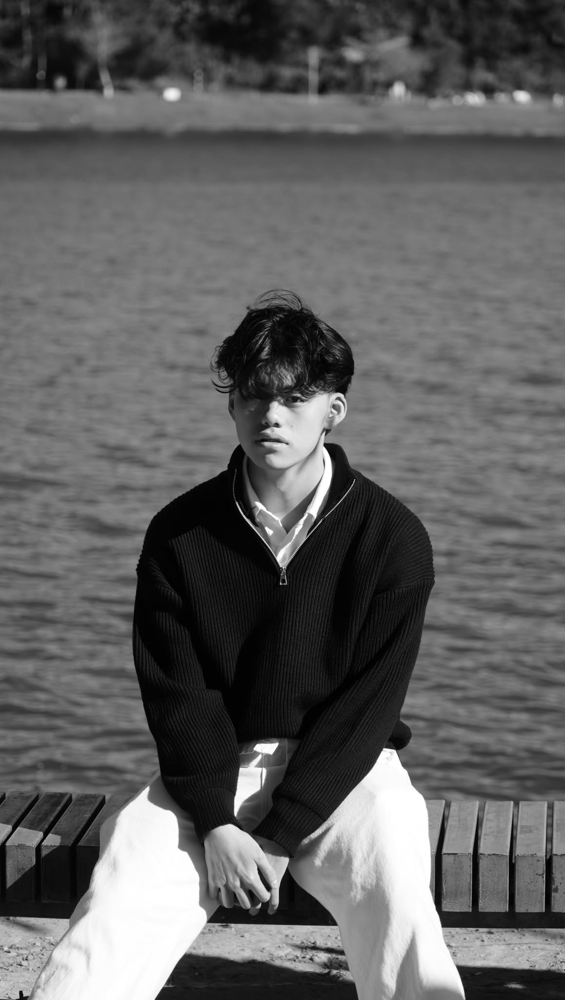
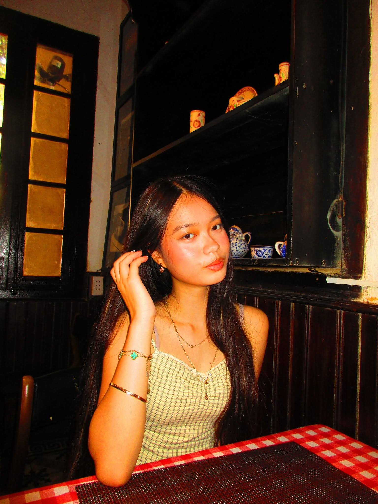
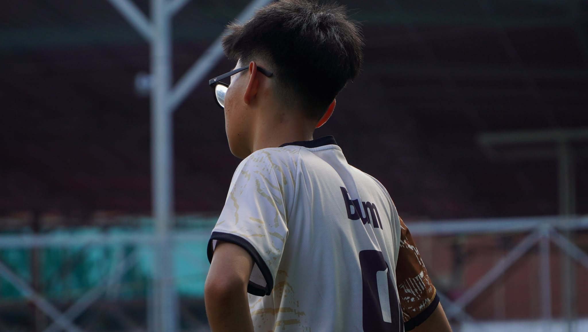
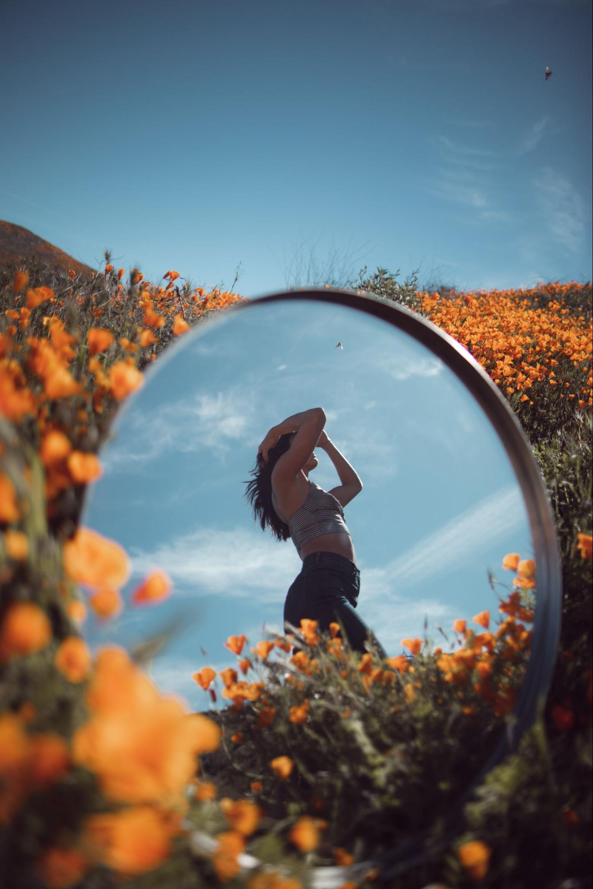
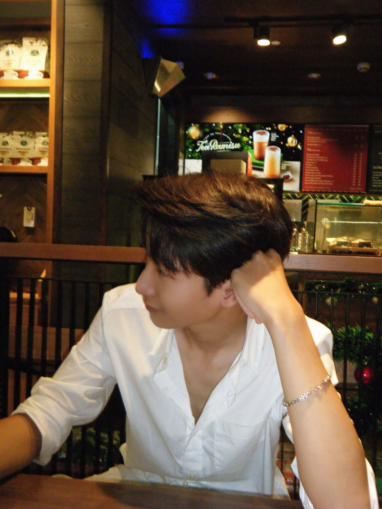

01 / Portrait
01 / PortraitVAR STUDIO / SELECTED WORKS
Portfolio
A collection of portrait, editorial and creative visual projects.
01 / Portrait 02 / Night story
02 / Night story 03 / Studio frame
03 / Studio frame
04 / Summer light
05 / City glow
06 / Monochrome
07 / Creative face
08 / New angle
09 / Editorial
10 / Final take